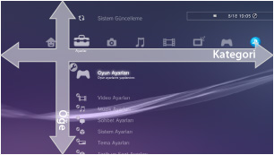
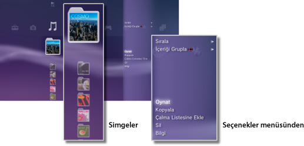
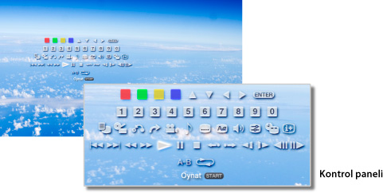

XMB™ hakkında > XMB™ (XrossMediaBar) menüsü hakkında
XMB™ (XrossMediaBar) menüsü hakkında
XMB™ menüsünü kullanma
PS3™ sistemi XMB™ (XrossMediaBar) adında bir kullanıcı arayüzü içerir. Yatay satır kategorilerde sistem özelliklerini ve dikey sütun her kategori altında gerçekleştirilebilen öğeleri gösterir.

| Yön düğmeleri | Bir kategori veya öğe seçer. |
|---|---|
 düğmesi düğmesi |
Seçili öğeyi onaylayın. |
 düğmesi düğmesi |
Bir işlemi iptal eder. |
 düğmesi düğmesi |
Seçenekler menüsü / kontrol panelini görüntüler. |
| PS düğmesi | XMB™ menüsünü görüntüleyin. |
İçerik oynatma
XMB™ menüsünden, disk veya depolama ortamındaki içeriği seçin ve sonra düğmesine basın. Oynatmayı durdurmak için, düğmesine basın.
İpucu
Depolama ortamını PS3™ sisteminin bazı modelleriyle kullanmak için uygun bir USB adaptörü (birlikte verilmez) gerekir.
Bilgi paneli
Ekranın sağ üstünde görüntülenen bilgi panelini kullanarak çevrimiçi Arkadaş sayısı gibi bilgileri görüntüleyebilir, [Yenilikler] altından yeni mesajlar ve en son bilgiler hakkında bilgilendirilirsiniz.

(1) |
Avatar * |
|---|---|
(2) |
Çevrimiçi Arkadaş sayısı * |
(3) |
Yeni metin sohbeti hakkında bilgi * |
(4) |
Yeni mesajlar hakkında bilgi |
(5) |
Tarih ve saat |
(6) |
Meşgul simgesi |
(7) |
[Yenilikler] altında bulunan bilgiler |
* Yalnızca PSNSM oturumu açıldığında görüntülenir.
Seçenekler menüsünü kullanma
XMB™ menüsünden bir simge seçin ve sonra seçenekler menüsünü görüntülemek için düğmesine basın. Seçenekler menüsü düğmesine basılarak görüntülenebilir veya gizlenebilir.

Seçenekler menüsü öğeleri
Seçenekler menüsü öğeleri kategoriye göre değişir.
| Oynat / Başlat / Görüntüle | İçeriği oynatır. |
|---|---|
| Diski Çıkar | Diski çıkarır. |
| Sil | İçeriği siler. |
| Kopyala | İçeriği sistem depolama alanına veya depolama ortamına kopyalar.*1 |
| Bilgi | İçerik hakkında bilgi görüntüler. Ad gibi bazı bilgiler değiştirilebilir. |
| Çalma Listesine Ekle | Oynatma listesine içerik ekler. |
| Tümünü Görüntüle | Depolama ortamında veya bir USB toplu depolama aygıtında kayıtlı tüm klasörleri görüntüler.*1 |
| Sırala | İçerik öğelerini ada, tarihe vb. göre sıralar. |
| İçeriği Grupla | Albüme, biçime veya diğer seçeneklere göre gruplama yöntemini değiştirir.*2 |
| Çoklu Sil | Birden fazla içerik öğesini seçer ve tümünü bir kerede siler. |
| Çoklu Kopyala | Birden fazla içerik öğesini seçer ve tümünü bir kerede kopyalar. |
| *1 |
Depolama ortamını PS3™ sisteminin bazı modelleriyle kullanmak için uygun bir USB adaptörü (birlikte verilmez) gerekir. |
|---|---|
| *2 |
Gruplama için gereken bilgiye sahip olmayan içerik bir [Bilinmeyen] klasörü içine gruplanır. İçeriğin bir kısmı gruplanabilir. |
Kontrol panelini kullanma
İçerik oynatma sırasında, kontrol panelini görüntülemek için düğmesine basın. Kontrol paneli düğmesine basılarak görüntülenebilir veya gizlenebilir. Kontrol paneli öğeleri oynatılmakta olan içeriğe göre değişir.

Birden fazla özelliği aynı anda kullanma
Kullanıcılar aynı anda birden fazla özelliğin keyfini çıkarabilirler. Örneğin,  (Müzik) altında müzik çalarken
(Müzik) altında müzik çalarken  (Fotoğraf) altında görüntüleri görüntüleyebilir veya
(Fotoğraf) altında görüntüleri görüntüleyebilir veya  (Ağ) altında Internet'e erişebilirsiniz.
(Ağ) altında Internet'e erişebilirsiniz.
Örnek: (Müzik) altında müzik çalarken (Fotoğraf) altında görüntüleme
1. |
|
|---|---|
2. |
PS düğmesine basın. |
3. |
|
İpuçları
- Super Audio CD oynatma sırasında veya
 (Ayarlar) >
(Ayarlar) >  (Müzik Ayarları) > [Çıkış Frekansı], [44.1/88.2/176.4 kHz] olarak ayarlandığında (Müzik) içeriğini diğer özelliklerle çalamazsınız.
(Müzik Ayarları) > [Çıkış Frekansı], [44.1/88.2/176.4 kHz] olarak ayarlandığında (Müzik) içeriğini diğer özelliklerle çalamazsınız. - Oynatılmakta olan içerik türüne bağlı olarak, genellikle aynı anda oynatılabilen bazı özellikler kullanılamayabilir.
Uyarı
Super Audio CD'ler bazı PS3™ sistemlerinde oynatılamazlar. Ayrıntılar için, bkz. [Oynatılabilir Disk Türleri].